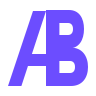
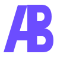
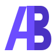
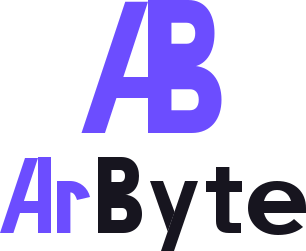
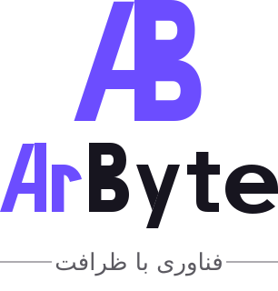
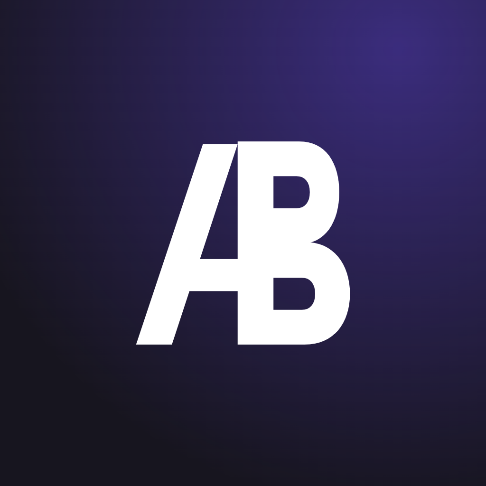
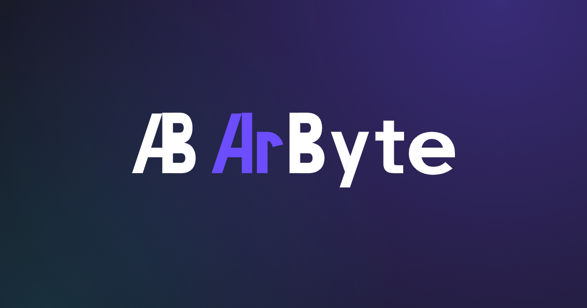

همهی نشانها در اندازهی واقعی رندر شدهاند. این صفحه تحویلدادنی نیست؛ ابزار بازبینی معیار پذیرش است.
معیار پذیرش: خوانا در ۲۴، ۳۲ و ۴۰ پیکسل.

{{ s.label }}خطوط ضخیمتر و کانتر بزرگتر. زیر ۴۰px این نسخه استفاده میشود.

{{ s.label }}معیار پذیرش: ساختار A و B بدون کمک گرادیان تشخیص داده شود.

duotoneدر وکتور، ستون عمودی B کامل و صاف است؛ فرم ۳ ممکن نیست.


در ۱۶px تداخل A و B باقی نمیماند، پس favicon فقط نشان A روی کاشی بنفش است.
ارتفاع نشان ۳۲px، نسخهی فشرده، کنار دکمهی بنفش برند. اختلاف رنگ گزارششده در بند ۳ اودیت اینجا برطرف است.

